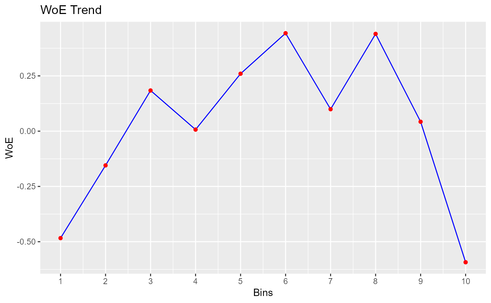

Bin continuous data manually.
Usage
rbin_manual(
data = NULL,
response = NULL,
predictor = NULL,
cut_points = NULL,
include_na = TRUE
)
# S3 method for rbin_manual
plot(x, print_plot = TRUE, ...)Arguments
- data
A
data.frameortibble.- response
Response variable.
- predictor
Predictor variable.
- cut_points
Cut points for binning.
- include_na
logical; if
TRUE, a separate bin is created for missing values.- x
An object of class
rbin_manual.- print_plot
logical; if
TRUE, prints the plot else returns a plot object.- ...
further arguments passed to or from other methods.
Details
Specify the upper open interval for each bin. `rbin` follows the left closed and right open interval. If you want to create_bins 10 bins, the app will show you only 9 input boxes. The interval for the 10th bin is automatically computed. For example, if you want the first bin to have all the values between the minimum and including 36, then you will enter the value 37.
Examples
bins <- rbin_manual(mbank, y, age, c(29, 31, 34, 36, 39, 42, 46, 51, 56))
bins
#> Binning Summary
#> ---------------------------
#> Method Manual
#> Response y
#> Predictor age
#> Bins 10
#> Count 4521
#> Goods 517
#> Bads 4004
#> Entropy 0.5
#> Information Value 0.12
#>
#>
#> cut_point bin_count good bad woe iv entropy
#> 1 < 29 410 71 339 -0.483686036 2.547353e-02 0.6649069
#> 2 < 31 313 41 272 -0.154776266 1.760055e-03 0.5601482
#> 3 < 34 567 55 512 0.183985174 3.953685e-03 0.4594187
#> 4 < 36 396 45 351 0.007117468 4.425063e-06 0.5107878
#> 5 < 39 519 47 472 0.259825118 7.008270e-03 0.4383322
#> 6 < 42 431 33 398 0.442938178 1.575567e-02 0.3899626
#> 7 < 46 449 47 402 0.099298221 9.423907e-04 0.4836486
#> 8 < 51 521 40 481 0.439981550 1.881380e-02 0.3907140
#> 9 < 56 445 49 396 0.042587647 1.756117e-04 0.5002548
#> 10 >= 56 470 89 381 -0.592843261 4.564428e-02 0.7001343
# plot
plot(bins)
